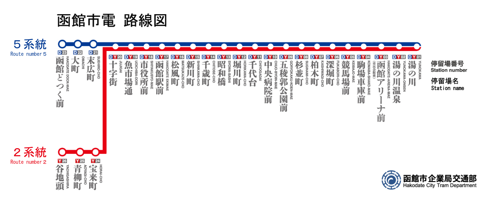
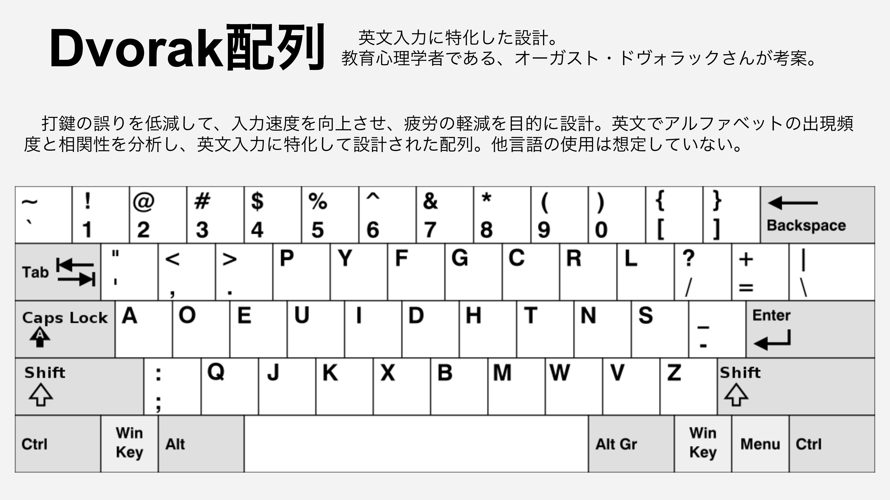
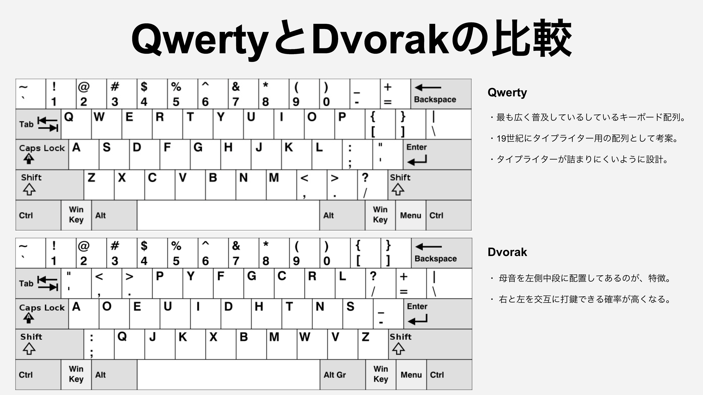
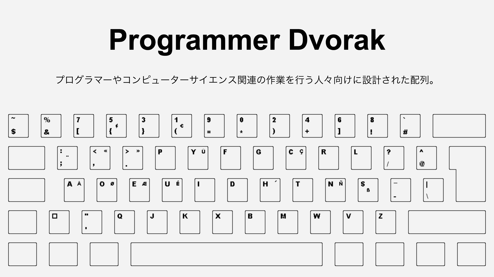
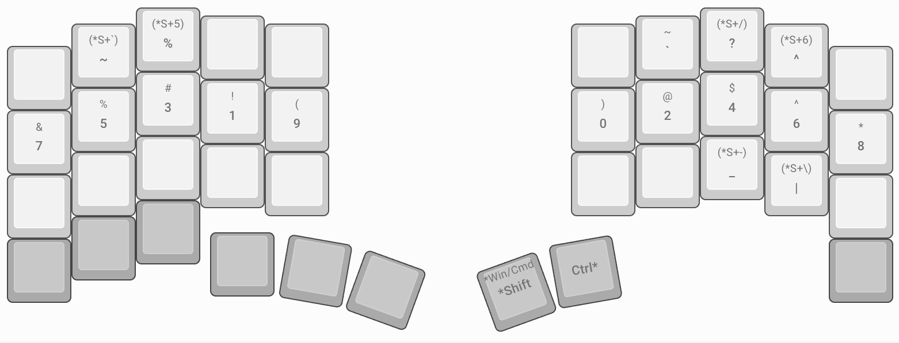

函館市電LT #
9/18 に開催された函館市電LTに参加してきました。
函館市電 #
函館市電というのは函館市が運営する路面電車。

Dvorak配列への移行 #
Dvorak配列へ移行した話をした。肩凝り対策に、分割キーボードを使っている。
#函館市電LT
— N Akita (@mini_bg_pro_N) September 18, 2023
Dvorak配列への移行。
分割、角度調整で自由に打鍵できます。 pic.twitter.com/yDeo3IYVUB
登壇内容 #
Dvorak配列とQwerty配列の比較や、カスタムキーマップについての内容です。
Dvorak配列 #
英文入力特化の配列。

QwertyとDvorakの比較 #
QwertyとDvorakの比較。母音を左中断に配置しているのが、Dvorakの特徴。

Programmer Dvorak #
プログラマーやコンピューターサイエンス関連の作業を行う人々向けに設計された配列。

カスタムキーマップ #
カスタムキーマップについて。Programmer Dvorak を参考に、レイヤーで運指量を抑えている。
レイヤー0 #
Dvorak配列

レイヤー1 #
左右クリック、タブ切り替え、拡大縮小…。その他ショートカットキーを配置。karabiner-elementsで上書きしている部分もあります。

レイヤー2 #
数字をメインに並べる。

レイヤー3 #
記号をメインに並べる。
その他 #
Dvorak を使うとショートカットキーがメチャクチャになる。 対策として、karabiner-elementsで、ショートカットキーを Qwerty と同じにしている。
変換例(押された時に、上書きされるように設定している) #
| 変換前 | 変換後 |
|---|---|
| cmd + ' | cmd + z |
| cmd + q | cmd + x |
| cmd + j | cmd + c |
| cmd + k | cmd + v |
| cmd + x | cmd + b |
スクロール #
ホイールでのスクロールがめんどくさいので、右クリックを押している間にトラックボールを転がすと、スクロールされるようにHammerspoonで設定している。
使用キーボード #
使用キーボードについて。
keyball39 #
人気で、入手困難な時期があったキーボード。慣れたら戻れなくなる。マウスまで手を運ばなくて良い。

Moonlander + トラックボールマウス #
ZSA が販売している Moonlander をカスタマイズした。ErgoDox EZ なども有名。Zip Kit で、不要なキーを削り、カメラスタンドで角度調整している。
keyball39入手困難の時に、思いついた方法。keyball難民の方にお勧めできる。現在は、keyball39 と Moonlander を使い分けている。

かなり、自由に調整できる。使い方は、無限大。

まとめ #
Dvorak配列は、英文入力は快適です。しかし、kを使った入力は、かなりきついです。日本語入力の際は、別の入力方式に検討した方が良いかもしれません。
- 大西配列
- Tomisuke配列
- Astarte配列
- DvorakJP
おわりに #
路面電車を貸し切りという、普段経験しないことに、非日常感を感じました。